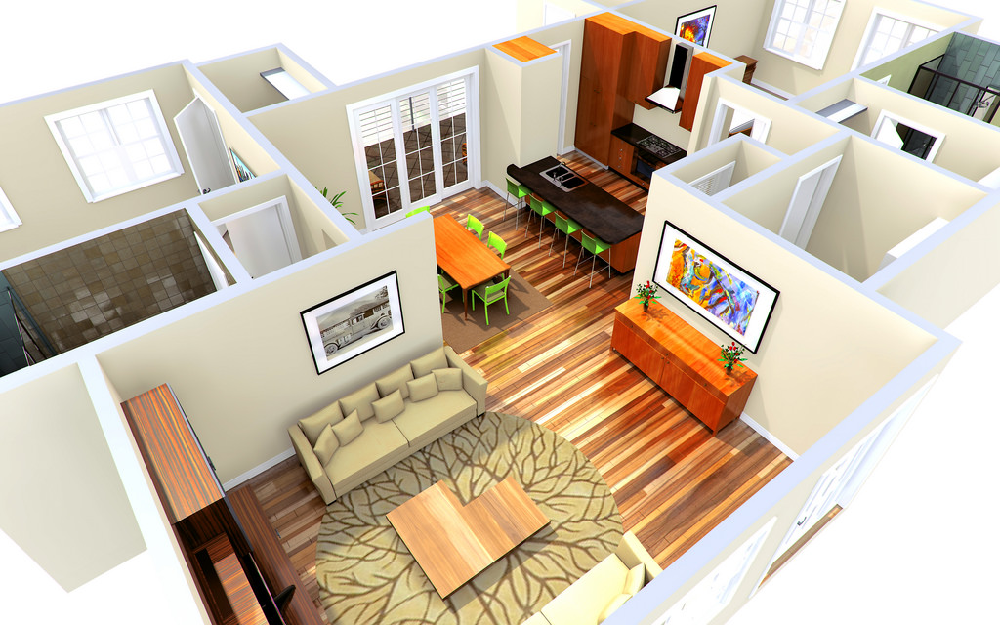
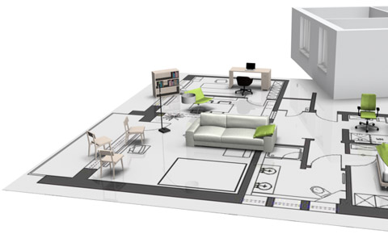
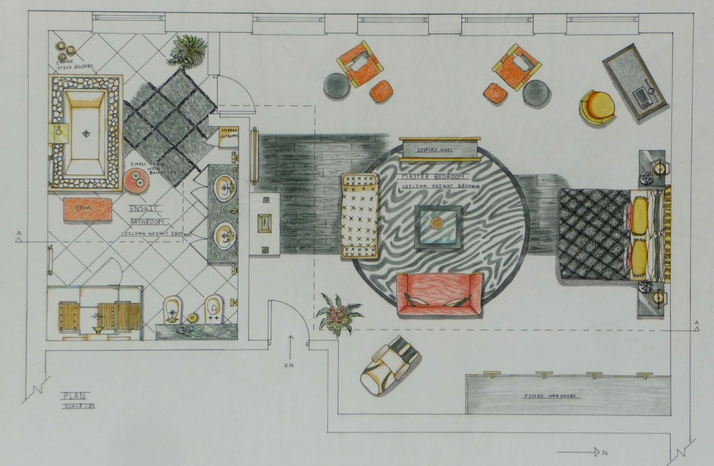
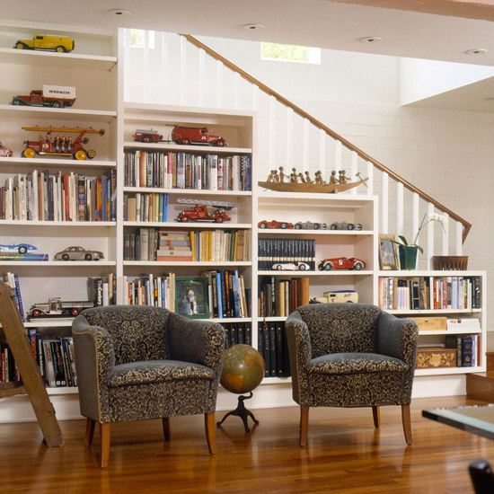
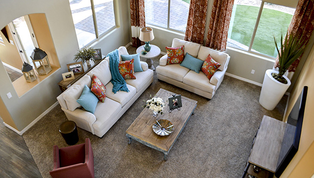

Today, space planning is no more restricted to residential spaces, but has floated to commercial projects too. An ideal space is one that can accommodate everything as well as give you the desired comfort. For example, if a living room is arranged with bulky furniture which leaves no room to accommodate anything else, then the whole idea about space may not make sense. With a cluttered space like this, you will constantly feel claustrophobic. Here are reasons why space planning is important in interior designing:
Room Functionality:

When it comes to space planning, you first need to consider the purpose of the room. Earlier, specific rooms were assigned for specific purposes. But today with the changing trend a room can be multifunctional too. For example, a kitchen is designed in
such a way that it is not only a work area but can accommodate dining space. Similarly, you can extend your bedroom to make enough space for a dressing room.
Selecting Furniture:

Space planning involves complete floor mapping. With a clear floor plan, you will be able to gauge the space. This will help
you to select the right furniture based on the size of the room. It will also give you an idea of how and where to place the furniture.
A Sense of Balance:

Ideal space planning can bring in a sense of balance between beauty and comfort. Be it the space of your kitchen or bedroom, every area counts. A space must have a good sense of balance. This comes when you are able to integrate everything well. Colour, design, placement, interior accessories, etc. are all responsible in creating the perfect balance.
Visually Appealing:

A space should be designed or planned in such a way that it should be visually appealing. Say for example, the first time you visit a restaurant, your reaction is either good or bad. Similarly, space planning plays an important role when it comes to visualization.
With a given space, how well you can place objects is instrumental.
A Personal Touch:

when designing space, has to keep in mind every client's personal taste. We all have our taste and preferences especially
when it comes to interiors. Space planning must successfully reflect what you are looking for. For example, do you want
your bedroom to be airy, cozy or just comfortable? So, once you are clear with the idea, you can go ahead and plan.
So, always plan a space that gives an extra room to accommodate your new ideas. Taking the above points
 into consideration, you can easily plan any given space. Make space planning your area of expertise and
into consideration, you can easily plan any given space. Make space planning your area of expertise and
design habitable wonders!